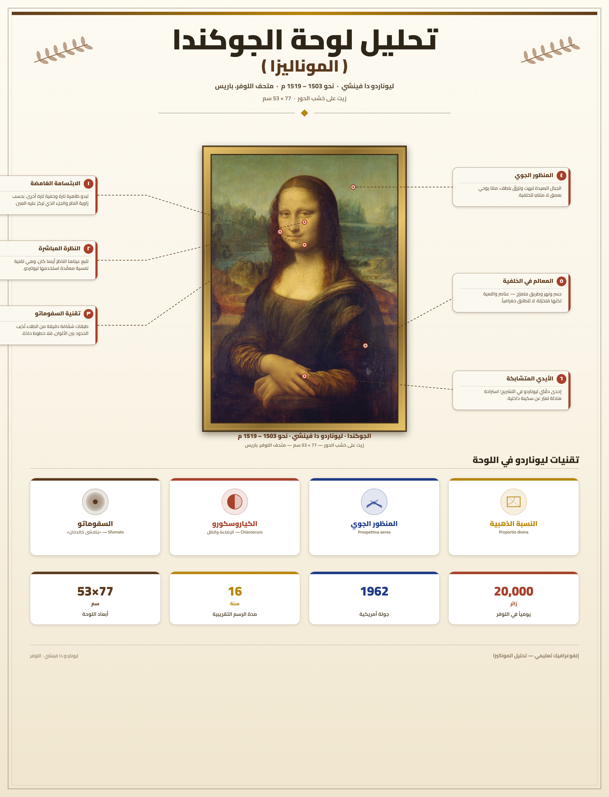
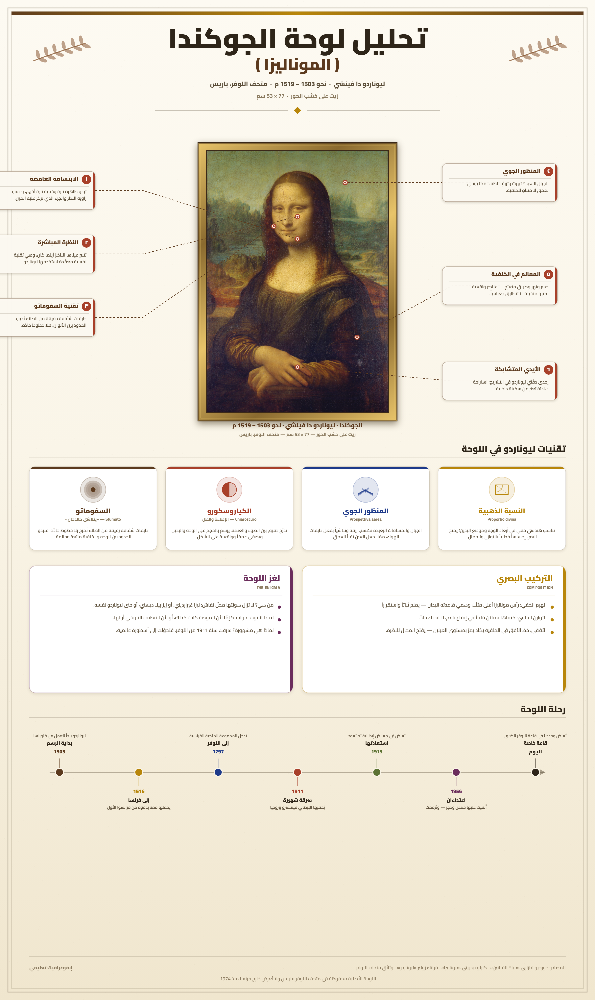

تمارين – لوحة الجوكندا (الموناليزا)
- السفوماتو (Sfumato):
- تقنية رسم ابتكرها ليوناردو دا فينشي وتعني "التدخين" أو "التلاشي"، وتعتمد على طبقات متعدّدة من الألوان الزيتية الشفّافة المتراكمة بدرجات متدرّجة ناعمة، ممّا يُعطي الوجه ملامح ناعمة واندماجًا متدرّجًا لا تُظهر فيه حدودًا واضحة. وتتجلى هذه التقنية في لوحة الجوكندا خاصة في رسم زاويتي الفم وحدود العينين، حيث يظهر ما يُسمّى "الابتسامة الغامضة".
- الكياري-سكورو (Clair-obscur):
- أسلوب فني يعتمد على التباين بين الظلّ والنور في رسم الأعمال الفنية، يُبرز الحجوم الثلاثية الأبعاد ويُعطي اللوحة واقعية وعمقًا. استخدمه ليوناردو دا فينشي في نمذجة وجه الجوكندا وجسدها لإبراز تقاطيعها بحيوية ودقّة.
- المنظور الجوّي (Perspective atmosphérique):
- تقنية فنية تعتمد على تمثيل المسافات البعيدة بألوان باهتة وأكثر زرقة وضبابية، ممّا يوحي بعمق الفضاء واتّساعه. استخدمها ليوناردو في خلفية لوحة الجوكندا، حيث تظهر الجبال والمناظر البعيدة بدرجات لونية متلاشية تميّزها عن المنظر القريب.
- البورتريه (Portrait):
- نوع فني يهدف إلى تمثيل شخص معيّن (صورته الشخصية)، وتطوّر في عصر النهضة بفضل الإعجاب بالإنسان وقدراته الفردية. ومن أشهر نماذجه لوحة الجوكندا لليوناردو دا فينشي التي تمثّل صورة نصفية (Buste) للسيدة ليزا غيرارديني.
| المحطة | التاريخ | المدّة عن تاريخ إنجاز اللوحة (سنة) |
|---|---|---|
| بداية إنجاز اللوحة بفلورنسا | 1503 | 0 |
| حملها إلى فرنسا من قبل ليوناردو | 1516 | 13 |
| وفاة ليوناردو واقتناء فرانسوا الأول اللوحة | 1519 | 16 |
| سرقة اللوحة من متحف اللوفر | 1911 | 408 |
| استرجاع اللوحة | 1913 | 410 |
المصدر: معطيات الدرس حول تاريخ لوحة الجوكندا (1503-1913)


تمثّل اللوحة صورة نصفية (Buste) لسيدة فلورنسية هي ليزا غيرارديني، زوجة التاجر فرانتشيسكو دل جيوكوندو، وقد رسمها ليوناردو دا فينشي حوالي سنة 1503.
1) العناصر الأساسية للوحة:
- السيدة في مقدّمة اللوحة، تجلس في مواجهة المشاهد تقريبًا، مع انحراف طفيف نحو اليمين.
- وجهها هادئ، وابتسامة غامضة غير واضحة الحدود، وشعر بني مسترسل على كتفيها.
- ثوب داكن اللون دون أكمام كاملة، بثنيات دقيقة ومتقنة.
- اليد اليمنى موضوعة فوق اليد اليسرى بتقاطع أنيق.
- خلفية منظر طبيعي واسع: جسر، طريق متعرّج، نهر، صخور وجبال في الأفق.
2) الخصائص الفنية:
- السفوماتو (Sfumato): تدريج ناعم للألوان في زاويتي الفم وحدود العينين، ممّا أعطى الابتسامة الغامضة.
- المنظور الخطّي والجوّي: توزيع دقيق للأحجام والمسافات، وألوان متلاشية في الخلفية البعيدة.
- التوازن والتناسب: جسد السيدة يشكّل شكلًا هرميًّا متوازنًا.
- الكياري-سكورو: تباين الظلّ والنور لنمذجة الوجه والجسم.
- الدقّة الفائقة: في رسم خصلات الشعر وثنيات القماش والأصابع.
3) الدلالات الفكرية:
- الإعجاب بالإنسان (L'humanisme): اللوحة تحتفي بالإنسان في أبهى صورة وأكثرها خصوصية.
- الاندماج بين الفن والعلم: استعان ليوناردو بمعارفه في التشريح والرياضيات.
- الحرية الإبداعية: اختيار الفنان لموضوعه وأسلوبه بعيدًا عن قيود الفنّ الديني الوسيطي.
- الإرث الإغريقي-اللاتيني: تطبيق مبدأ التناسب الرياضي والجمالي.
- الإعتماد على التراث الإغريقي-اللاتيني: استعان ليوناردو بمبدأ التناسب الرياضي والجمالي الذي أرساه فلاسفة اليونان، وطبّقه في رسم الأبعاد والتناسب بين أعضاء الجسد.
- تقديم الإنسان في أبهى صورة: تركّز اللوحة على الإنسان كمحور للعمل الفني، فتعرض ليزا غيرارديني بملامح هادئة وواقعية وجمال إنساني عميق، وهو ما يجسّد مبدأ الإنسانية (L'humanisme).
- تطبيق القواعد والمقاييس الرياضية: اعتمد ليوناردو على قواعد المنظور الخطّي الرياضي في توزيع الأحجام والمسافات، وأدخل المنظور الجوّي في رسم الخلفية.
- الدقّة والواقعية: أبدع ليوناردو في رسم أدقّ التفاصيل: خصلات الشعر، وثنيات القماش، والشكل الدقيق للأصابع، ممّا يدلّ على رهافة ملاحظته ومهارته العالية.
- الاندماج بين الفن والعلم: استعان ليوناردو بمعارفه في التشريح والرياضيات والطبيعة، فجمعت اللوحة بين الدراسة العلمية والرائعة الفنية.
- تجنّب الإفراط في الزخرفة: خلافًا للتيّار الباروكي، اتّسم فن النهضة بالتواضع في "الديكور" والتركيز على الإنسان وعلى إبراز جماله الفطري.
- مقدمة: تحديد لوحة الجوكندا كأشهر عمل فني في تاريخ الإنسانية ورمز للنهضة الأوروبية.
- تطوير: أولاً. بطاقة تعريف اللوحة وصاحبها؛ ثانياً. خصائصها الفنية والتقنية؛ ثالثاً. دلالاتها الفكرية؛ رابعاً. أثرها العالمي.
- خاتمة: الجوكندا وثيقة حضارية ورمز خالد للإبداع الإنساني.
مقدمة
تُعدّ لوحة الجوكندا (الموناليزا) أشهر عمل فني في تاريخ الإنسانية، وأبرز رمز على الإطلاق للنهضة الفنية الأوروبية. رسمها الفنان الإيطالي العبقري ليوناردو دا فينشي بين سنتي 1503 و1519، وهي محفوظة اليوم في متحف اللوفر بباريس. وتمثّل هذه اللوحة وثيقة حضارية تنطق بتحوّل الفكر الأوروبي في مطلع العصر الحديث، وتجسّد أبرز مبادئ عصر النهضة ومقوّماته.
تطوير
أولاً. بطاقة تعريف اللوحة وصاحبها
ليوناردو دا فينشي (1452-1519) فنان وعالم إيطالي، يُعدّ النموذج الأمثل لـ"رجل عصر النهضة" بفضل تعدّد مواهبه: رسّام ونحّات ومهندس معماري وعالم تشريح ورياضيات وميكانيك وطبيعيات وجيولوجيا وفلك وموسيقي. رسم لوحة الجوكندا حوالي سنة 1503 بطلب من التاجر الفلورنسي فرانتشيسكو دل جيوكوندو ليزا غيرارديني زوجته. اللوحة من نوع بورتريه، بتقنية زيت على خشب الحور، بأبعاد 77 × 53 سم، محفوظة بمتحف اللوفر بباريس.
ثانياً. الخصائص الفنية والتقنية
اعتمد ليوناردو في اللوحة على تقنيات فنية مبتكرة: السفوماتو (Sfumato)، وهي تقنية تعتمد على طبقات متعدّدة من الألوان الزيتية الشفّافة المتراكمة بدرجات متدرّجة ناعمة، ما أعطى الابتسامة الغامضة. والكياري-سكورو (Clair-obscur)، وهي أسلوب التباين بين الظلّ والنور لنمذجة الوجه والجسم. والمنظور الخطّي لتوزيع الأحجام والمسافات، والمنظور الجوّي لتمثيل الفضاء البعيد بألوان متلاشية. إضافة إلى الدقّة الفائقة في رسم خصلات الشعر وثنيات القماش وتفاصيل الأصابع.
ثالثاً. الدلالات الفكرية
تعكس اللوحة جملة من المبادئ الأساسية في فكر عصر النهضة الأوروبية: الإعجاب بالإنسان (L'humanisme)، حيث تُجسّد فكرة أن الإنسان هو محور الاهتمام، وأنّ قيمته تكمن في قدراته الفردية. الاندماج بين الفن والعلم، إذ استعان ليوناردو بمعارفه في التشريح والرياضيات والطبيعة. الحرية الإبداعية، إذ عبّرت اللوحة عن حرية الفنان في اختيار موضوعه وأسلوبه. والإرث الإغريقي-اللاتيني، خاصة في مبدأ التناسب الرياضي والجمالي.
رابعاً. أثر اللوحة العالمي
تجاوزت شهرة الجوكندا حدود المتاحف لتغدو واحدة من أكثر الصور المعروفة في العالم. وهي محفوظة اليوم بمتحف اللوفر بباريس، ويقصدها سنويًّا ملايين الزوّار. وقد تعرّضت لسرقة شهيرة سنة 1911 على يد العامل الإيطالي فينتشنزو بيروجيا، ثم استرجعت سنة 1913، وهو ما ساهم في إشهارها العالمي. وتُعدّ اليوم مرجعًا أساسيًّا في تدريس تاريخ الفن، وموضوع إلهام للعديد من الأعمال الفنية والثقافية.
خاتمة
تُعدّ لوحة الجوكندا تجسيدًا كاملًا لفكر عصر النهضة الأوروبية ومبادئه، فهي ليست مجرّد صورة لسيدة فلورنسية، بل هي وثيقة حضارية تنطق بتحوّل الفكر الأوروبي في مطلع العصر الحديث، ورمز خالد للإبداع الإنساني.